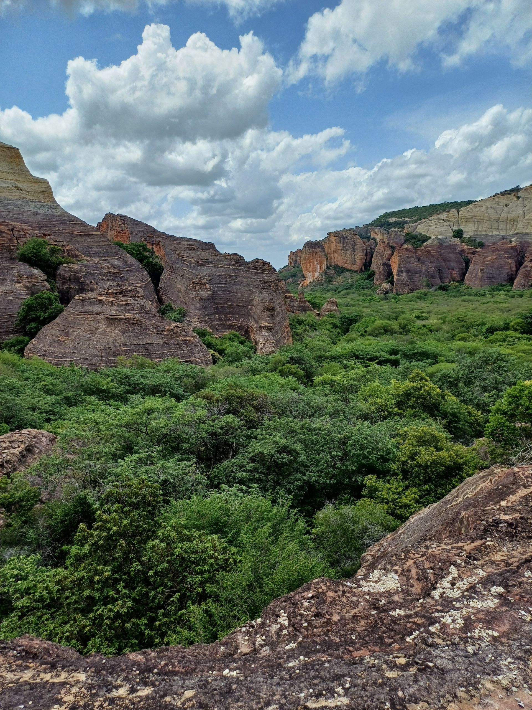
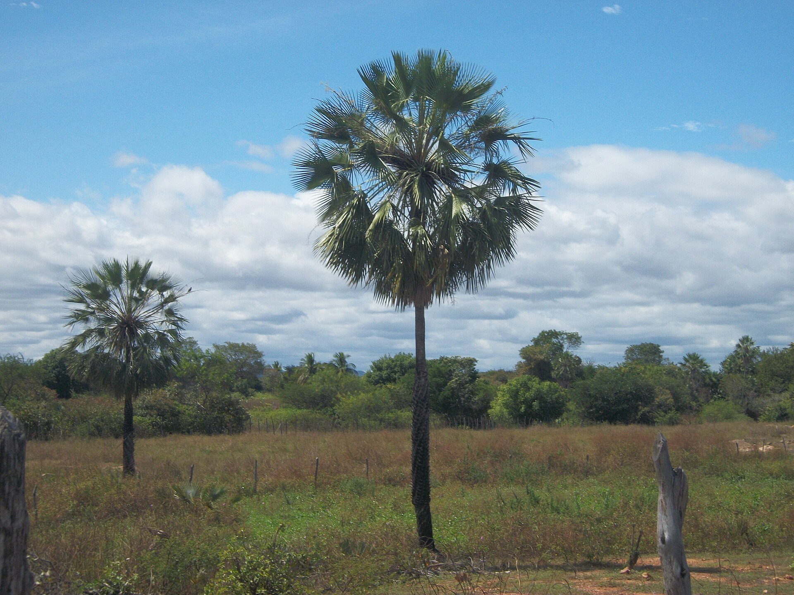
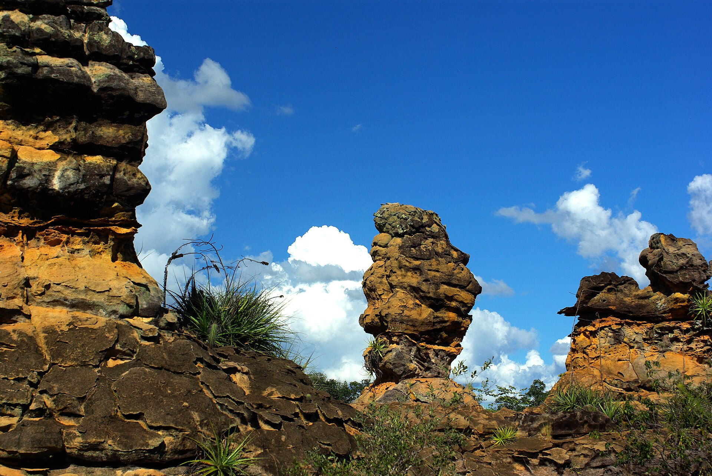
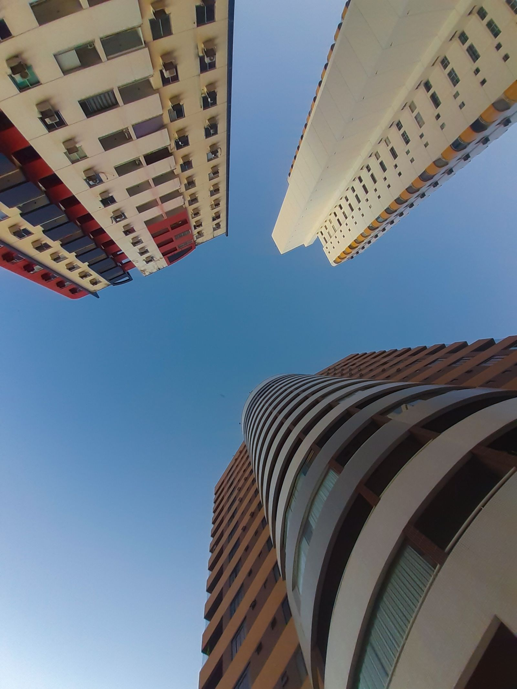

Natureza
Delta em mar aberto
O Delta do Parnaíba é o único delta em mar aberto das Américas, com dezenas de ilhas, mangues e dunas.

Na Serra da Capivara, no sul do estado, as paredes de arenito guardam pinturas rupestres feitas por povos que viveram na região há dezenas de milhares de anos. Cenas de caça, dança e vida em grupo foram pintadas com pigmentos de tom avermelhado, a mesma cor que inspira a identidade visual deste site.
O parque nacional é Patrimônio Mundial da UNESCO e concentra centenas de sítios arqueológicos.

O Delta do Parnaíba é o único delta em mar aberto das Américas, com dezenas de ilhas, mangues e dunas.

A carnaúba fornece cera, palha e fibras. O extrativismo da cera sustenta famílias do interior há gerações.

A cajuína, bebida clara e adocicada feita do suco do caju, é um símbolo da culinária piauiense.

No Parque Nacional de Sete Cidades, o vento esculpiu blocos de pedra que lembram ruínas e ganharam nomes populares.

Esse cacto resiste à seca e floresce à noite. Na cultura sertaneja, ele aparece em músicas, poemas e histórias.

A capital fica entre dois rios, o Parnaíba e o Poti, e é a única capital do Nordeste fora do litoral.